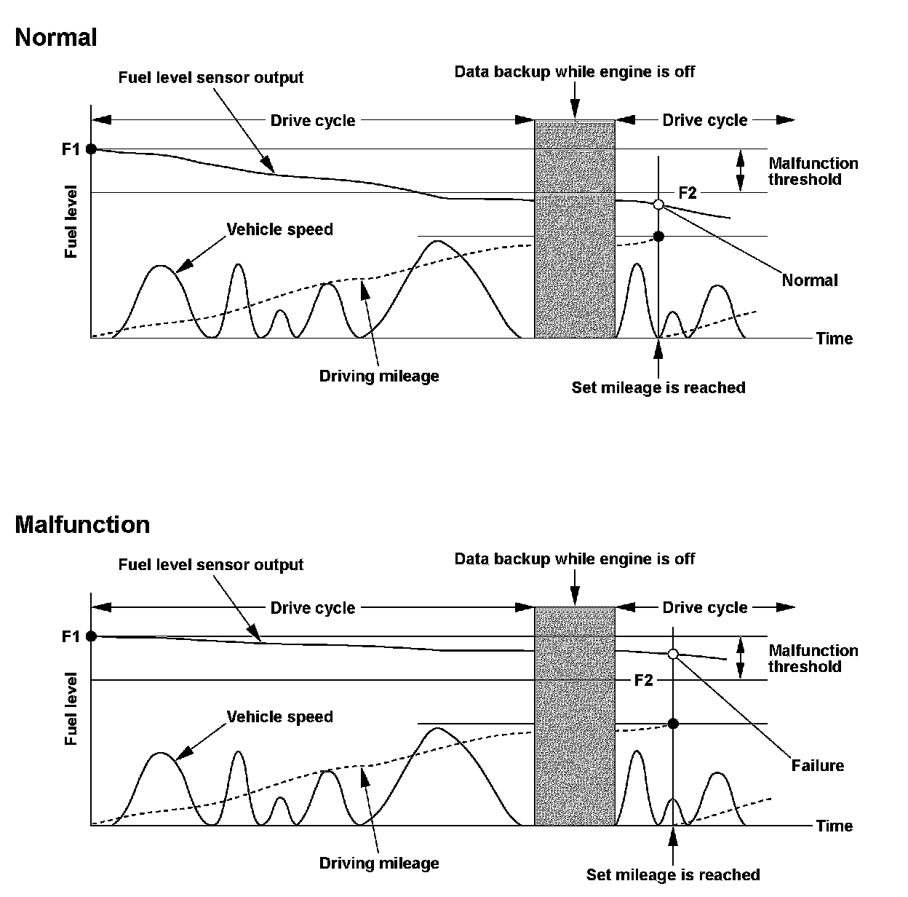
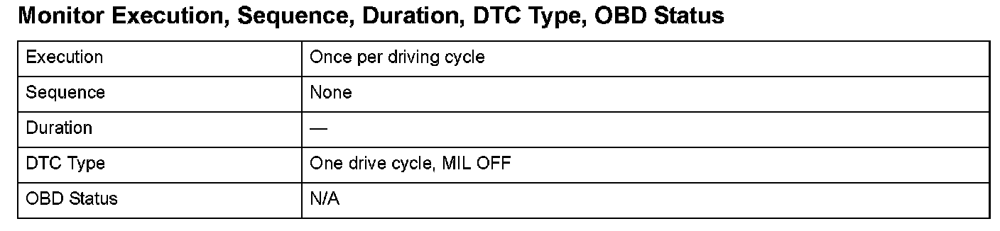
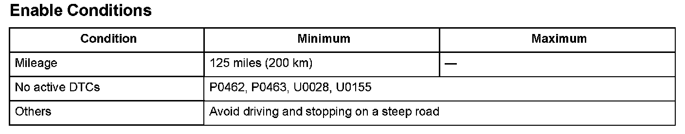

Advanced Diagnostics
DTC P0461: Fuel Level Sensor (Fuel Gauge Sending Unit) Circuit Range/Performance Problem
General Description
The fuel level sensor is incorporated with the fuel pump and installed in the fuel tank. Using a built-in potentiometer and float, it converts the movement of the float into electrical signals that correspond to the fuel level, and it indicates the amount of fuel in the fuel tank. If the powertrain control module (PCM) receives no change in the fuel level sensor output after driving for a specified number of miles, it detects a malfunction and stores a DTC.

Monitor Execution, Sequence, Duration, DTC Type, OBD Status

Enable Conditions
Malfunction Threshold
The change in the fuel level sensor output is 3.5 % or less.
Driving Pattern
Drive for the specified mileage under Enable Conditions without refueling, (turning the ignition switch off is acceptable.)
- Drive the vehicle in this manner only if the traffic regulations and ambient conditions allow.
Diagnosis Details
Conditions for illuminating the indicator
When a malfunction is detected, the DTC and the freeze frame data are stored in the PCM memory. The MIL does not come on.
Conditions for clearing the DTC
The DTC and the freeze frame data can be cleared by using the scan tool Clear command or by disconnecting the battery.